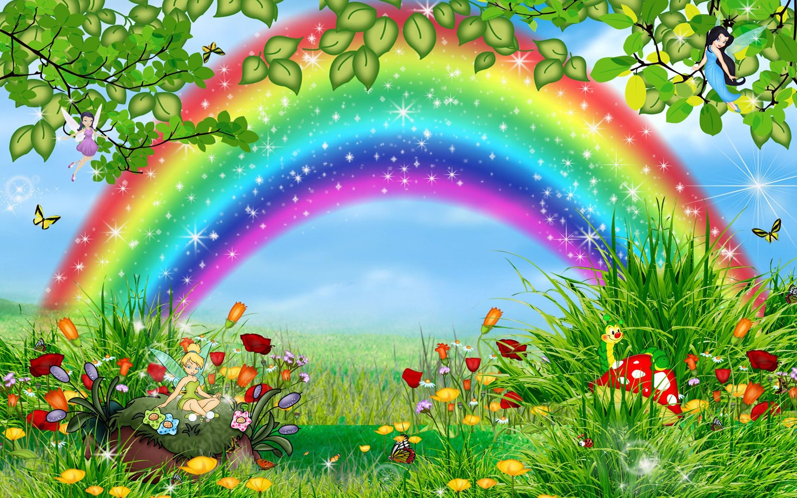
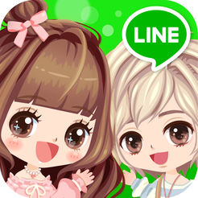
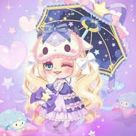
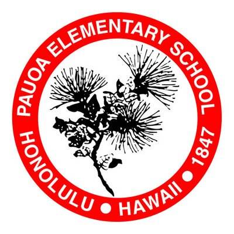
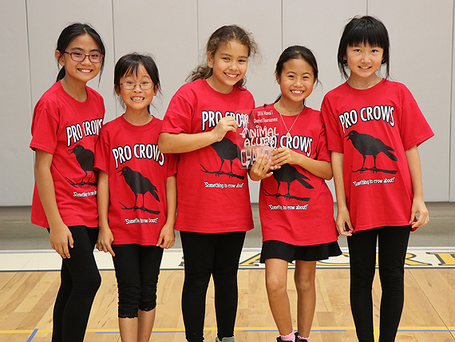

About Me!!
Hi! My name is Ziyu and this is my first website! You can call me Rainbow because all my friends call me that anyway...! My friends are Kate, Jessica, Izzy, Maviri, and my little deary Angelina! I love Rainbows and Unicorns and everything happy! :D Here is a rainbow with fairies, butterflies, flowers, and happiness everywhere!

More about me!
Now, here are things that me likey. I love to have a wonderful time with my friends, and when I do, I will have a goody-goody day! Sometimes I will get into a fighty with my friends, which is normal. But, if I do get into a fight, I will have a grump-grump day. I love to play LINE PLAY, which is a fun game! There, you can make friends, create your avatar, and many more! Here is a photo of the app!

Here is an avatar from line play! Pretty huh? :)

Things that are special to me
Here are more things that I likey. (the general things that me likey.) I love my iPad, and my friends. I also love my family. I like my iPad because when I am bored, I can play LINE PLAY!! My favorite! Also, I love my friends because they care for me and make me laugh!! I love my family because they care for me, give me love, and they are the best! Oh! and I also love God because He is the creator of this world and He does miracles and is awesome!!
Also...
Also, there are other things that you should know about me. Ok, I know my grammer is really off right now, but in Ziyu language, there are no such thing as grammer or shifted verb tenses. So... Now on to the things that you should also know to be my friend. First, I will tell you the things that I no likey. I told you about the things I like, now next up is this! First, I dislike sad things, or in my language it's called moody-moody. I no likey because when ever moody-moody comes out, I get moody-moody, and I will have a grump-grump day. Or grumpy day. I also no likey when my iPad gets taken away for a day, or even worse, a week. It gets taken away when I don't listen to my parents and I get a punishment. Sigh. Now, I will "talk about" (my teacher never lets me say this...) the other things about me in school. I go to Pauoa Elementary, and I'm in 5th grade. Soon enough, I'm gonna go to Kuananakoa Middle school and be a 6th grader! Not very exited but oh well. My teacher is called Mrs. Oliveira and she is super nice. Here are a few pictures of Pauoa Elem.

This is the Pauoa Logo.

The one on the most right is me! We won champion! We were at the Pauoa Robotics Ohana Lego League District Tournament on the year 2017!
Here is a website that helped me a lot to make this website!
Wanna be my friend?
Do you want to be my friend? I would like to be anyone's friends! As long as you know these things about me, you will have no problem being my friend!